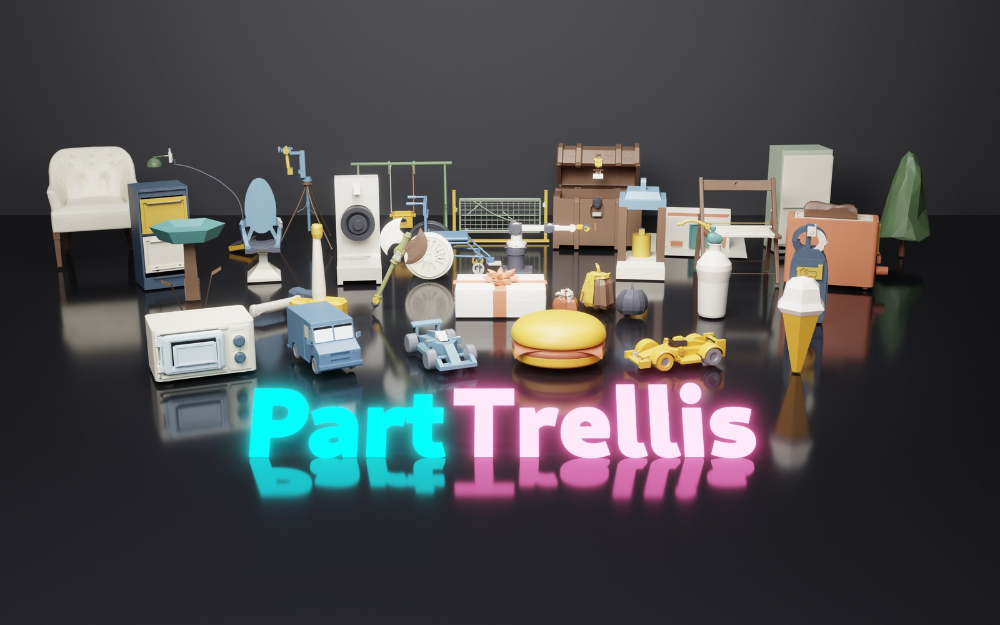
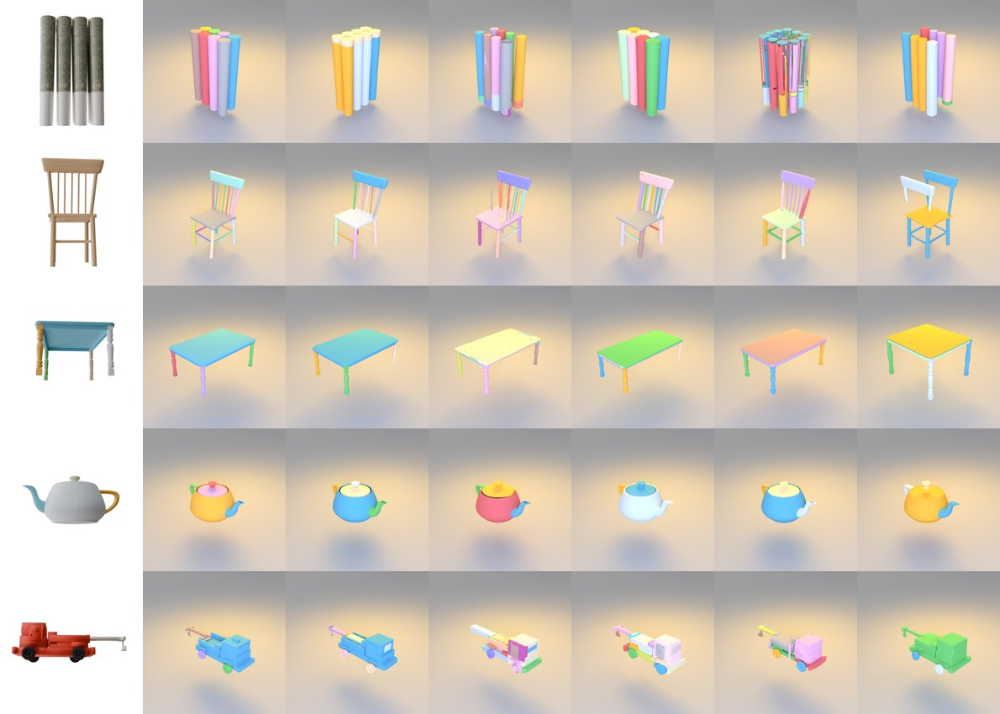

Extending Native 3D Generators to the Part Level
1Alaya Lab 2The University of Tokyo 3Institute of Science Tokyo 4University of California, Merced

Native 3D generators turn one image into a single mesh. TRELLIS.2 and its peers deliver high-fidelity non-watertight geometry with materials, but the output is one fused object, while downstream work such as editing, rigging and simulation operates on part-level assets. A naive idea is to run a 3D segmentation network on the fused mesh that TRELLIS.2 generates, but such pipelines are slow and bounded by the accuracy of the segmentation. We want a simple way to extend an existing native 3D generator to the part level. But we face a critical problem: the O-Voxel grid stores one sheet of surface per voxel, so a single volume cannot represent the interface where two parts touch, at any resolution.
We introduce a dual-volume representation to solve this problem and put forward PartTrellis, a part-level extension of TRELLIS.2 built on a dual-volume form of its O-Voxel representation.
PartTrellis keeps the generation speed and quality of TRELLIS.2 while extending it to the part level, with no mask or segmenter in the pipeline. Its training data come from sources of many kinds, including CAD models and assets authored by an LLM-driven agent; to our knowledge it is the first 3D generative model trained on agent-authored part data. Surprisingly, we also find that whole-object fidelity improves over the same backbone fine-tuned on the same dataset. Against part generation pipelines of different paradigms, it lowers whole-object Chamfer distance by 40% and raises strict part F-score by 16%.
Held-out test set of 986 objects that every method completes. Whole-object (W) and Hungarian-matched part (P) metrics; best in each column belongs to PartTrellis.
| Method | CDW↓ | F1W0.1 | F1W0.05 | mIoUP | CDP↓ | F1P0.1 | F1P0.05 |
|---|---|---|---|---|---|---|---|
| TRELLIS.2@1024 + X-Part | 0.0350 | 0.900 | 0.780 | 0.449 | 0.0804 | 0.703 | 0.559 |
| Hunyuan3D-2.1 + X-Part | 0.0314 | 0.917 | 0.814 | 0.489 | 0.0764 | 0.728 | 0.597 |
| OmniPart | 0.0366 | 0.901 | 0.769 | 0.456 | 0.0913 | 0.664 | 0.518 |
| PartPacker | 0.0389 | 0.892 | 0.749 | 0.449 | 0.0986 | 0.640 | 0.492 |
| AutoPartGen | 0.0373 | 0.901 | 0.771 | 0.466 | 0.0919 | 0.678 | 0.535 |
| PartTrellis (ours) | 0.0186 | 0.975 | 0.919 | 0.521 | 0.0613 | 0.785 | 0.692 |

@article{parttrellis,
title = {PartTrellis: Extending Native 3D Generators to the Part Level},
author = {Yu, Ruihan and Fu, Lian and Niu, Muyao and Huang, Zheng-hui and
Tsai, Yu-Ju and Kuno, Sho and Lan, Fengbo and Wu, Erwin and
Yang, Ming-Hsuan and Zhang, Kaipeng and Wang, Zhixiang},
year = {2026}
}